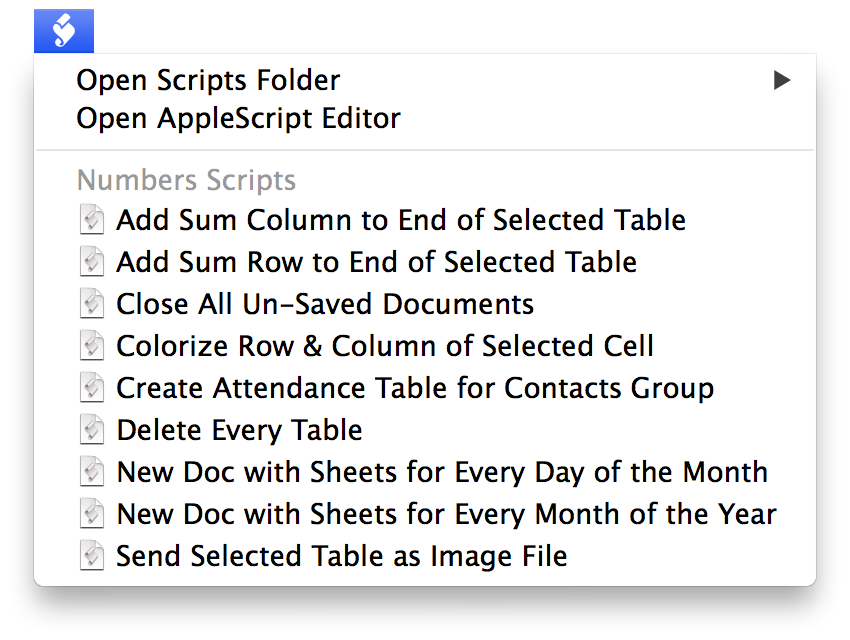
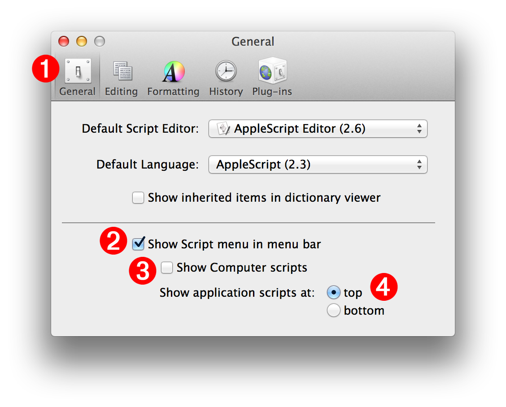
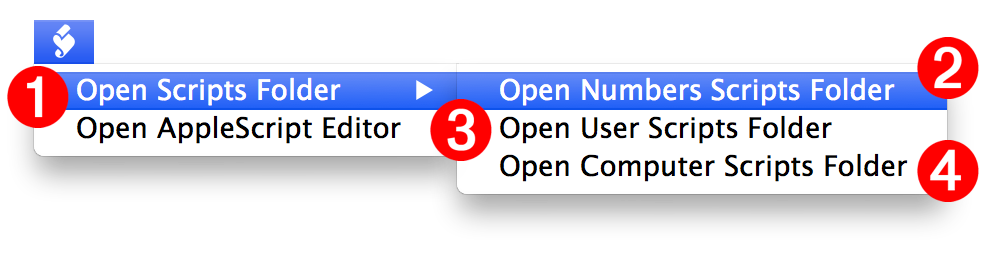
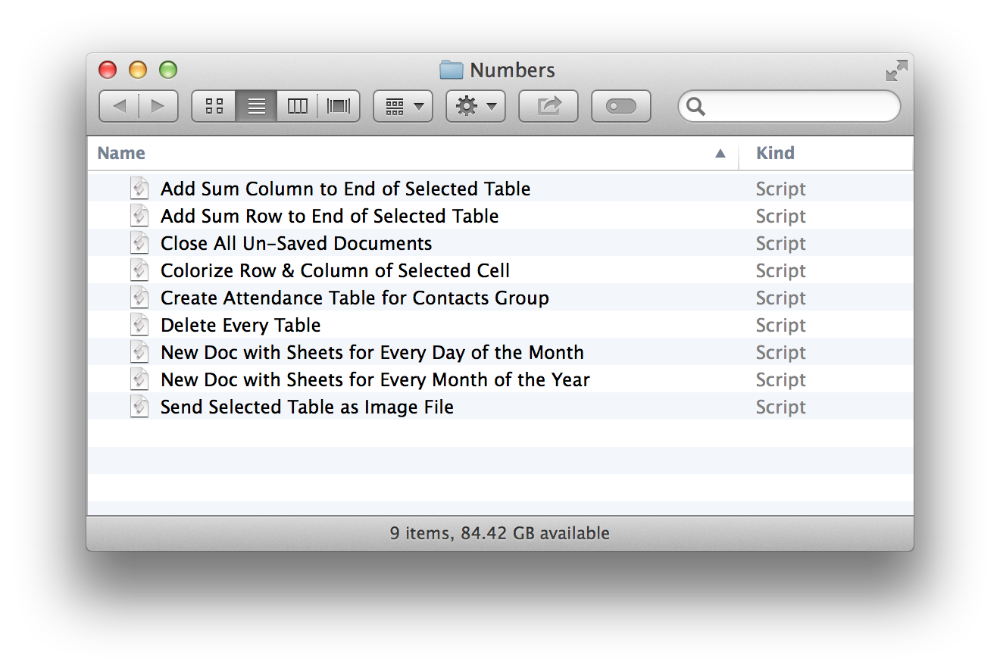
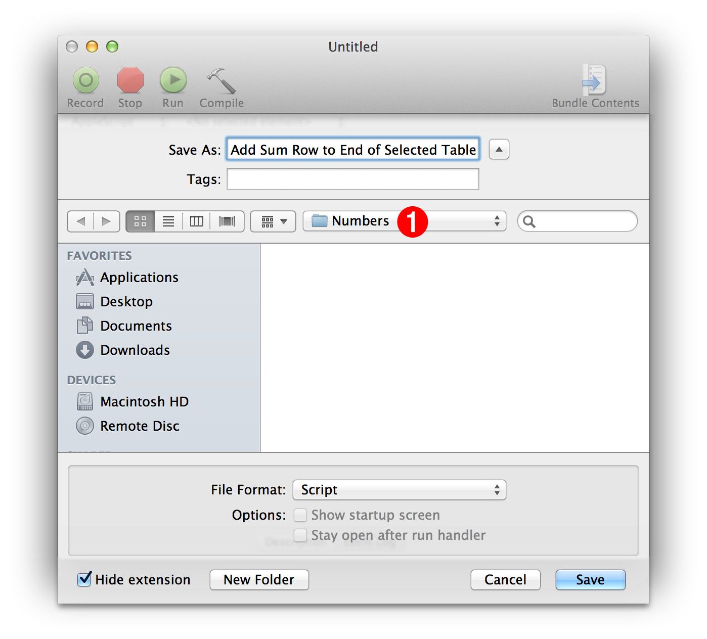
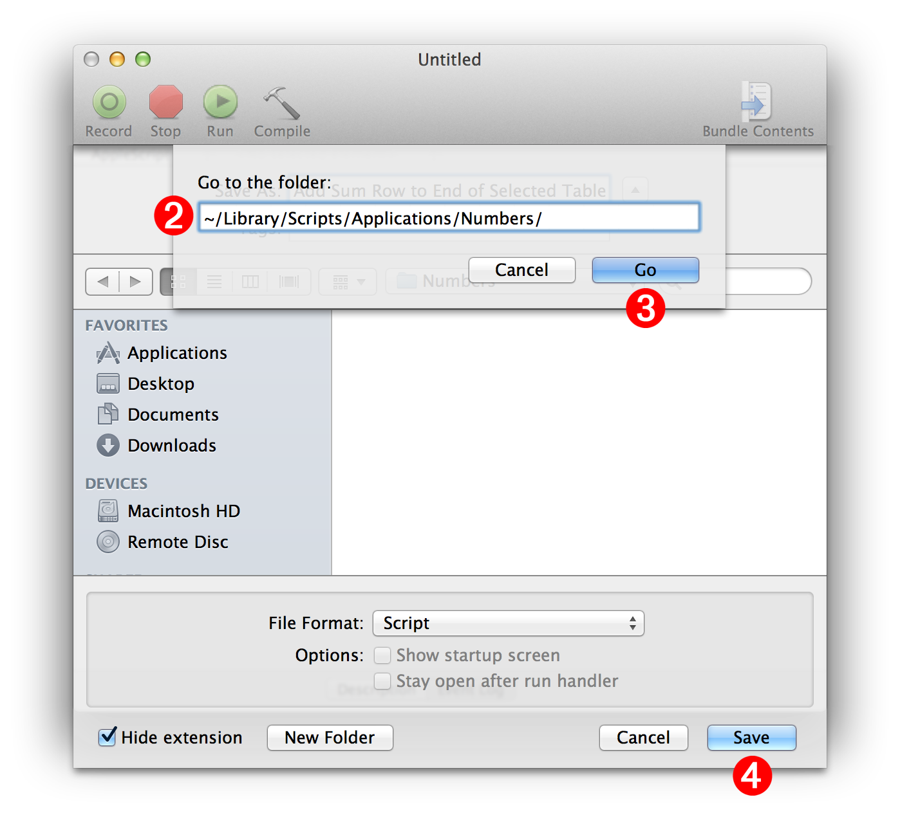

The system-wide Script Menu is an invaluable tool for automation enthusiasts. It provides quick access to favorite automation tools, stored and displayed in an organized manner. And this utility is versatile, as it is able to execute AppleScript scripts and applets, UNIX Shell scripts, as well as Automator workflows.
The menu list of the Script Menu utility is generated dynamically based upon the automation files placed within the user Scripts folder, located within the user Library folder. User-created sub-menus can be inserted into the Script Menu, by placing groups of automation files within folders added to the Scripts folder.
Users can also determine when the menu’s Automation files (scripts) can be accessed. They can be available from within every application, or from within a specific application when it becomes the frontmost application.
The documentation on this page outlines how to setup and activate the Script Menu on your computer.
If you’d like the “just the facts” version of assistance, watch this movie:
The system-wide Script Menu is turned on and off from within the preferences window of the AppleScript Editor application, accessed by selecting Preferences… from the AppleScript Editor application menu.
The following illustration and callouts, outline a standard set of setup options:

(1) The General tab of the AppleScript Editor’s preference window contains the controls for the Script Menu.
(2) Select this checkbox to activate the Script Menu.
(3) This checkbox enables or disables the display of the scripts in the computer Library folder. To simplify the use of the Script Menu, this option can be left unchecked.
(4) These radio buttons determine whether the scripts for the frontmost application appear above or below the scripts placed in the top-level of the user Scripts folder. Script files located in the top-level of the user Scripts folder are available from within every application.
DO THIS ►Turn on the system-wide Script Menu by selecting the Show Script menu checkbox (2) in the General pane of the AppleScript Editor preference window.
The next section describes how to enable and access the Numbers Script Folder for storing and displaying scripts for the Numbers application.
If you have the iWork applications installed on your computer, you can run this short script from within the AppleScript Editor application to turn on the system-wide Script Menu and create script folders for each of the iWork applications.
The Script Menu provides options for opening the designated script storage folders for computer, user, and currently frontmost application. When any of these “open folder” options are selected, the Script Menu will create the folder if it doesn’t exists, and then display the contents of the folder in a new Finder window.

(1) The Open Scripts Folder sub-menu contains menu options for accessing the three designated script folder locations.
(2) Scripts placed in Application Scripts Folder are available for the current user, only when the named application is frontmost. This folder is located in the following path:
Home ► Library ► Scripts ► Applications ► <Name of Application>
(3) Scripts placed in User Scripts Folder are available for the current user, from within any application. This folder is located in the following path:
Home ► Library ► Scripts
(4) Scripts placed in Computer Scripts Folder are available for any user account, from within any application. This folder is located in the following path:
Startup Disk ► Library ► Scripts
Follow these steps to setup the Script Menu:
DO THIS ►Make (Numbers|Pages|Keynote) the frontmost application, and select the Open (Numbers|Pages|Keynote) Scripts Folder option from the Script Menu. The scripts folder will be created and opened in a Finder window on the desktop.
DO THIS ►Add your (Numbers|Pages|Keynote) scripts to the folder, and close the folder’s Finder window. The scripts will now appear in the Script Menu when (Numbers|Pages|Keynote) is the frontmost application.

Here are some useful tips for working with the Script Menu:
- To run a script or automation file, simply select it from the Script Menu.
- To reveal the related automation file of a Script Menu menu item, hold down the Shift key (⇧) when you select the menu item.
- To open the related automation file of a Script Menu menu item, into the AppleScript Editor (or default editing application), hold down the Option key (⌥) when you select the menu item.
To add a script to the Script Menu, it must be saved as a script file placed into the (Numbers|Pages|Keynote) script folder. Follow these steps that explain how to save a script file from the AppleScript Editor application, into the (Numbers|Pages|Keynote) script folder.

DO THIS ►After entering a name for the script to be saved in the Save Dialog (⬆ see above ) , use the popup directory menu (1) to navigate to the (Numbers|Pages|Keynote) Script folder located at this path:
Home > Library > Scripts > Applications > (Numbers|Pages|Keynote)
DO THIS ►Click the Save button, in the Save Dialog, to save the script file into the (Numbers|Pages|Keynote) Script folder, making the script automatically available from the Script Menu.
Where is My Library Folder?
By default, the user’s Library folder is not visible from within the Finder or in Open and Save dialogs. If the user Library folder on your system is hidden it will not be accessible via the directory navigation popup in the Save dialog. To address this issue, you can choose to make the Library folder visible (see sidebar), or follow these steps:
DO THIS ►Type the key combination Shift-Command-G ( ⇧⌘-G ) to summon the UNIX navigation sheet (2) (⬇ see below )

DO THIS ►Enter the UNIX path to the Numbers Scripts folder (⬇ see below ) in the text input field on the sheet (2): (⬆ see above )
~/Library/Scripts/Applications/Numbers
DO THIS ►Click the Go button (3) on the sheet, and the Save Dialog will navigate to, and display the contents of, the Numbers Scripts folder. You can then click the Save button (4) to save the script.
Script files placed or saved into the (Numbers|Pages|Keynote) Scripts folder, will automatically appear in the Script Menu the next time it is selected.